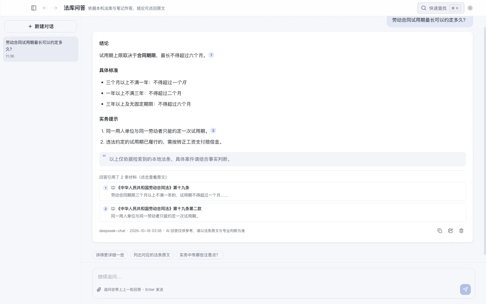

2023 年，纽约两名律师把 ChatGPT 编造的六个判例写进了提交法院的文书，被法院罚款并公开通报（Mata v. Avianca 案，全球律协的 AI 指引里至今拿它当反面教材）。他们栓在哪一步？不是用了 AI，是没核。
AI 引用法条出错，最危险的不是整条编造，而是半真半假：法是真的，条号是旧的；条号是真的，内容掺了它自己的推断。看起来越像真的，越容易被直接写进文书。
为什么会编
三个原因叠在一起：
- 生成式 AI 按语言概率补全文本，「第五百七十七条」这样的字串它见得多，补起来毫不犹豫，对错它并不知道；
- 模型的训练数据有截止时间，之后的修法它不知道；
- 中国的法律修订频繁，修订往往整体调整条文序号。公司法 2023 年修订（2024 年 7 月 1 日施行）后条文序号大面积变动，旧条号对应的内容整体位移；民法典 2021 年施行后，合同法、婚姻法、担保法等九部法律同时废止，但 AI 至今仍可能引「《中华人民共和国合同法》第 X 条」。
第一步：确认这部法的现行文本
到国家法律法规数据库（flk.npc.gov.cn）搜法律名称，看两件事：这部法是否现行有效，还是已被废止、被新法替代；现行文本是哪一年修订的版本。如果 AI 引的是已废止的法，后面两步就不用做了，直接去现行法里找对应规定。
第二步：对条文序号
拿到现行文本后，不要拿 AI 给的条号直接定位，先用内容反查：按 AI 转述的规则在现行文本里检索关键词，找到条文的真实位置。修订过的法律里，旧条号的位置上常常是一条不相干的规定，按条号直接引用就会引错。
第三步：逐字对内容
找到条文后把原文完整读一遍，对照 AI 的转述。常见的偏差有两种：把「可以」说成「应当」，任意性规范和强制性规范的区别恰恰是意见书的关键；把两条规定揉成一条，各取半句。转述与原文有出入的，以原文为准，引用时抄原文。
每次都手动三步，太慢了怎么办
两个减负的办法。
其一，从提示词上游约束：要求 AI 输出意见时必须注明「法律名称＋条文序号」，并写明「不确定的直接说不确定」。这不能让它不编，但能让每条引用都有固定的核查入口。
其二，把前两步交给工具。法脉的做法是把核查做成自动动作：AI 给出的每条法条引用都回内置法库核对，核得上的直接链到条文原文，点开即可比对；核不上的保持纯文本，不装作有出处。你要做的只剩第三步，读原文、对内容。

无论用什么工具，最后一条不变：写进文书的每一条引用，原文都要过你的眼睛。